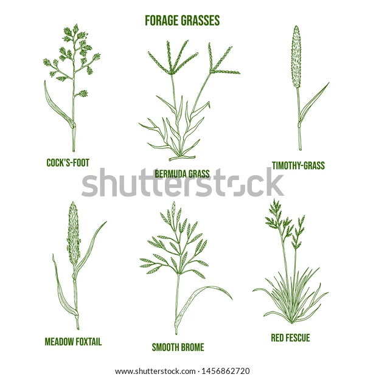
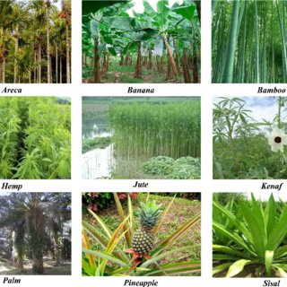
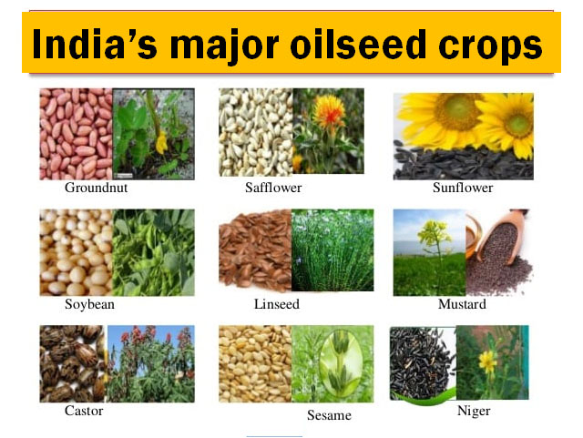
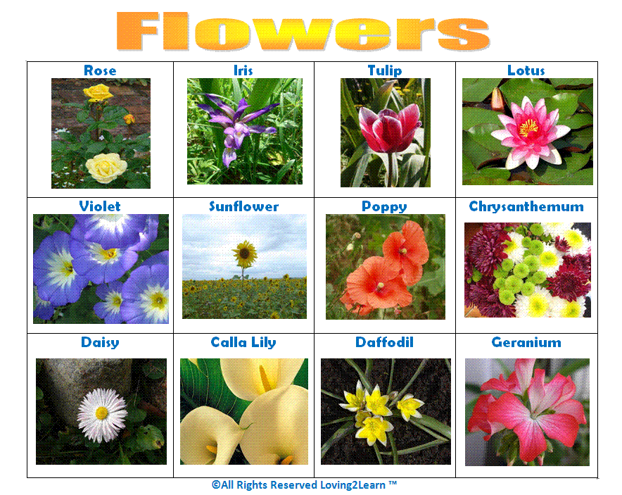
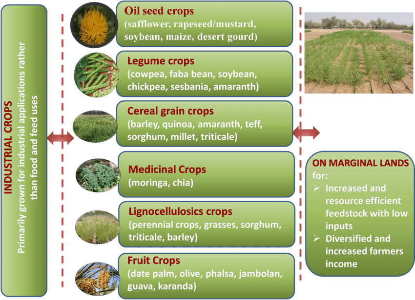

Crops
Uses of Crops
Food crops
Food crops have a multitude of uses beyond direct consumption:
Human Consumption
This is the primary use, where food crops are consumed directly or
processed into various food products.
Livestock Feed
Many food crops are used as feed for livestock, such as corn, soybeans, and alfalfa.
Industrial Use
Some crops are used in various industries. For example, corn is used to produce ethanol,
soybeans are used in making biodiesel, and sugarcane is processed into sugar and ethanol.
Medicinal Purposes
Certain food crops have medicinal properties and are used in traditional medicine or as
sources for pharmaceuticals. Examples include garlic, ginger, and turmeric.
Food Additives and Ingredients
Food crops are used as additives or ingredients in processed foods. For instance,
cornstarch is used as a thickener, and various fruits are used for flavoring.
Animal Fodder
Apart from livestock, food crops are also used as fodder for domestic animals like poultry
and rabbits.
Seed Production
Food crop seeds are produced and sold to farmers for planting in subsequent seasons.
Export
Many countries export food crops to other nations, contributing to international trade and
economy.
Bioplastics and Biofuels
Some food crops are utilized in the production of bioplastics and biofuels, offering more
sustainable alternatives to conventional materials and fuels.
Soil Improvement
Certain food crops, like legumes, are used in crop rotation to improve soil fertility through
nitrogen fixation.

Forage crops
Forage crops, also known as fodder crops or animal feed crops, serve various purposes in agriculture and animal husbandry.
Here are some common uses:
Livestock Feed
The primary purpose of forage crops is to provide nutrition to livestock such as cattle, sheep,
goats, and horses. These crops are rich in nutrients like protein, carbohydrates, vitamins, and minerals
necessary for animal health and growth.
Grazing
Forage crops are often grown specifically for grazing by livestock. Animals are allowed to graze
directly on the crops in pasture fields, providing them with fresh and natural feed.
Hay Production
Some forage crops, like alfalfa, clover, and grasses such as timothy and bermudagrass, are
harvested and dried to make hay. Hay is stored and fed to livestock during periods when fresh forage
is scarce, such as winter months.
Silage Production
Certain forage crops, including corn, sorghum, and legumes like alfalfa and clover, are harvested
and ensiled to make silage. Silage is fermented and stored feed, often used as a supplement to fresh
forage or hay, especially in dairy and beef cattle operations.
Soil Improvement
Forage crops, particularly legumes like clover and alfalfa, are beneficial for improving soil fertility
through nitrogen fixation. They have symbiotic relationships with nitrogen-fixing bacteria, which convert
atmospheric nitrogen into forms usable by plants, enriching the soil with nitrogen.
Erosion Control
Forage crops with dense root systems, such as certain grasses and legumes, help prevent soil
erosion by holding the soil in place with their roots. They are often planted in areas prone to
erosion, such as sloping land or along waterways.
Crop Rotation
Forage crops are used in crop rotation systems to break pest and disease cycles, improve soil
structure, and enhance overall farm productivity. They can also serve as cover crops to protect soil
during fallow periods.
Biodiversity
Forage crops contribute to agricultural biodiversity by providing habitat and food sources for
beneficial insects, birds, and other wildlife species.

Fiber crops
Fiber crops, also known as fiber-producing crops, have various uses across different industries.
Here are some common uses:
Textiles
Fiber crops are primarily cultivated for their fibers, which are used in the textile
industry to produce fabrics and clothing. Examples include cotton, flax (linen), hemp,
and jute. These fibers are spun into yarn and then woven or knitted into textiles for
apparel, home furnishings, and industrial applications.
Paper Production
Fiber crops like wood pulp (from trees), kenaf, and hemp are used in the production of
paper and cardboard. The fibers are pulped and processed into paper products for printing,
packaging, writing, and other purposes.
Rope and Cordage
Certain fiber crops, such as hemp and sisal, are known for their strong and durable fibers,
making them ideal for rope, twine, and cordage production. These materials are used in agriculture,
construction, shipping, and various other industries.
Composite Materials
Fiber crops are increasingly being used in the production of composite materials, where fibers
are combined with resins or other matrices to create lightweight and strong materials used in automotive
parts, construction materials, and sporting goods.
Biofuels
Some fiber crops, like certain varieties of hemp and kenaf, can be processed to extract fibers for use in
biofuel production. These fibers can be converted into bioethanol or bio-diesel, providing renewable alternatives
to traditional fossil fuels.
Animal Bedding
Fibrous materials from crops like straw and hemp are used as bedding for livestock and pets.
These materials provide a comfortable and absorbent bedding option for animals in agricultural and domestic
settings.
Insulation
Fibers from crops like cotton and hemp can be processed and used as insulation materials in buildings.
These natural fibers provide thermal insulation and contribute to energy efficiency in homes and commercial
structures.
Soil Erosion Control
Fiber crops with extensive root systems, such as jute and flax, are used in erosion control applications.
The fibers help stabilize soil on slopes, prevent erosion, and promote vegetation growth in areas prone to soil loss.

Oil Crops
Oil crops, also known as oilseed crops, are cultivated primarily for the extraction of oils from their seeds or fruits. These oils have diverse
uses across various industries. Here are some common uses of oil crops:
Cooking and Food Preparation
Edible oils extracted from oil crops like soybeans, sunflower seeds, canola, palm fruit,
and olives are widely used for cooking, frying, baking, and salad dressings. These oils
provide flavor, texture, and nutritional benefits to foods.
Food Processing
Oil crops are used as ingredients in a wide range of processed foods, including snacks, baked goods,
margarine, sauces, and condiments. They provide flavor, moisture, and texture enhancement to these products.
Biofuel Production
Oil crops such as soybeans, rapeseed (canola), palm, and oil palm are used to produce biodiesel,
a renewable alternative to fossil fuels. The oils extracted from these crops are converted into
biodiesel through processes like transesterification,offering a cleaner and more sustainable energy source.
Industrial Applications
Some oils extracted from oil crops are used in industrial applications, such as lubricants, hydraulic fluids,
and surfactants.Castor oil, for example, is used in the production of lubricants and hydraulic fluids due to
its viscosity and lubricating properties.
Cosmetics and Personal Care Products
Oil crops are used in the production of cosmetics, skincare products, and hair care products. Oils like coconut oil,
jojoba oil,and argan oil are popular ingredients in moisturizers, lotions, shampoos, and conditioners due to their
hydrating and nourishing properties.
Animal Feed
Oilseed cakes, the byproducts of oil extraction, are used as high-protein feed supplements for livestock, poultry, and
aquaculture. These cakes, derived from crops like soybeans, canola, and sunflower seeds, provide essential nutrients to
support animal growth and development.
Pharmaceuticals and Nutraceuticals
Certain oils extracted from oil crops have medicinal properties and are used in pharmaceutical formulations and dietary
supplements. For example, fish oil, derived from oily fish like salmon and mackerel, is rich in omega-3 fatty acids and is
used to promote heart health and reduce inflammation.
Soap and Detergent Production
Vegetable oils derived from oil crops like palm, coconut, and soybeans are used in the production of soaps, detergents,
and cleaning products. These oils provide cleansing and emulsifying properties necessary for effective cleaning.

oramental crops
Ornamental crops are cultivated primarily for decorative purposes due to their aesthetic appeal. These crops are used in landscaping, gardening,
and floral arrangements to enhance the visual appeal of indoor and outdoor spaces. Here are some common uses of ornamental crops:
Landscaping
Ornamental crops are extensively used in landscaping to create visually pleasing and functional outdoor spaces.
They are planted in gardens, parks, public spaces, and along roadsides to add color, texture, and interest
to the landscape.
Gardening
Home gardeners often cultivate ornamental crops in their gardens for ornamental purposes. These crops include
flowering plants, ornamental grasses, shrubs, and trees selected for their visual appeal and suitability to
the garden environment.
Indoor Décor
Ornamental crops are used indoors to decorate homes, offices, hotels, and other indoor spaces. Houseplants, flowering
plants, and foliage plants are commonly used to add greenery and freshness to interior décor.
Cut Flowers
Many ornamental crops are grown specifically for their flowers, which are harvested and used in floral arrangements,
bouquets,and decorations for special occasions such as weddings, parties, and events.
Public Gardens and Botanical Gardens
Ornamental crops are showcased in public gardens, botanical gardens, and arboretums for educational and recreational
purposes.These gardens provide opportunities for visitors to appreciate the beauty and diversity of ornamental plants.
Seasonal Decorations
Ornamental crops play a significant role in seasonal decorations, such as Christmas trees, wreaths, and holiday
arrangements.Evergreen trees, poinsettias, holly, and mistletoe are popular choices for festive décor.
Urban Beautification
Ornamental crops are used for urban beautification projects aimed at enhancing the aesthetic appeal of cities and urban
spaces.Street plantings, hanging baskets, and floral displays contribute to creating attractive and welcoming
urban environments.
Horticultural Therapy
Ornamental crops are used in horticultural therapy programs to improve mental health, emotional well-being, and physical
rehabilitation. Engaging with plants and nature has therapeutic effects and promotes relaxation, stress relief, and
sensory stimulation.

Industrial crops
Industrial crops are cultivated primarily for non-food purposes and have a wide range of industrial applications.
Here are some common uses of industrial crops:
Biofuel Production
Industrial crops such as corn, sugarcane, soybeans, and oil palm are used to produce biofuels
like ethanol and biodiesel.These renewable fuels offer alternatives to fossil fuels and help reduce
greenhouse gas emissions.
Fiber Production
Industrial crops like cotton, hemp, jute, and flax are grown for their fibers, which are used in textile
and rope production.These fibers are strong, durable, and versatile, making them suitable for various
industrial applications.
Bioplastics
Certain industrial crops, including corn, sugarcane, and soybeans, are used to produce bioplastics as
alternatives to traditional petroleum-based plastics. Bioplastics are biodegradable and help reduce
environmental pollution caused by plastic waste.
Pharmaceuticals
Some industrial crops contain compounds with medicinal properties and are used in the pharmaceutical industry.
For example, plants like opium poppy, foxglove, and periwinkle are cultivated for the extraction of drugs used
in pain relief,heart medication, and cancer treatment.
Essential Oils
Industrial crops such as lavender, eucalyptus, and peppermint are grown for the extraction of essential oils
used in aromatherapy,cosmetics, perfumes, and flavorings.
Rubber Production
Rubber trees are cultivated in tropical regions for the production of natural rubber latex, which is used in
the manufacturing of tires,automotive parts, footwear, and industrial products.
Dye Production
Certain industrial crops, like indigo, madder, and safflower, are grown for the extraction of natural dyes
used in textile, leather, and cosmetic industries.
Tannin Production
Industrial crops such as oak and chestnut trees are cultivated for the extraction of tannins used in leather tanning,
wood preservation, and ink production.
Industrial Oils
Some industrial crops produce oils that are used in various industrial applications, such as lubricants, hydraulic fluids,
and surfactants.Examples include castor oil, tung oil, and jojoba oil.
Animal Feed and Bedding
Certain industrial crops, such as corn, soybeans, and alfalfa, are used as feed for livestock and poultry.
Byproducts of these crops, such as corn gluten meal and soybean meal, are also used as feed supplements.
Additionally, crop residues like corn stover and straw can be used as animal bedding.
